// make it, then show it
Make an app, a clip and a store page, in one place.
Start a phone app from a template, edit it by clicking, make a looping clip of it for your feed, then get the screenshots and words the app stores ask for. Free, and it works with no AI. Your tribe’s AI helpers make it go further.
- 54 apps to start from
- 128 motion templates
- 50 screenshot styles
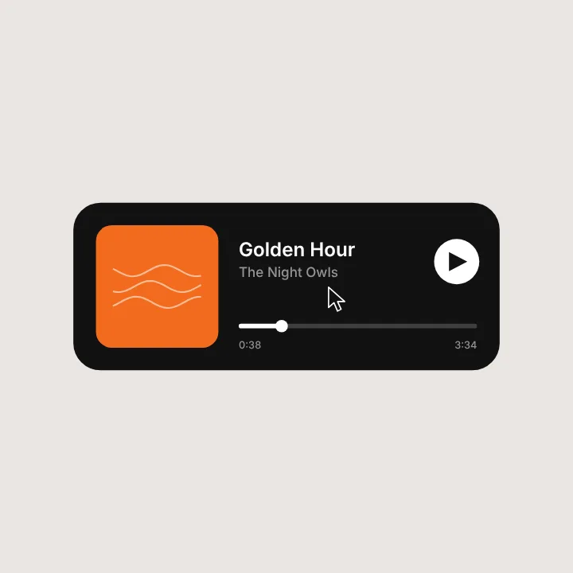
// app creator
Start from a real app, then make it yours.
Every template opens as several linked screens with example data. Click any word to change it, link a button to another screen and press Play to try it like a real app.
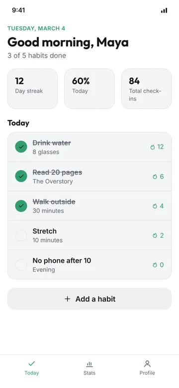
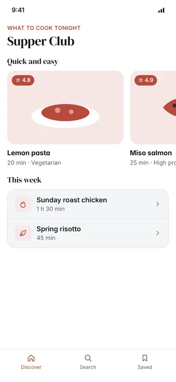
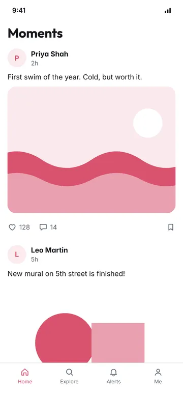
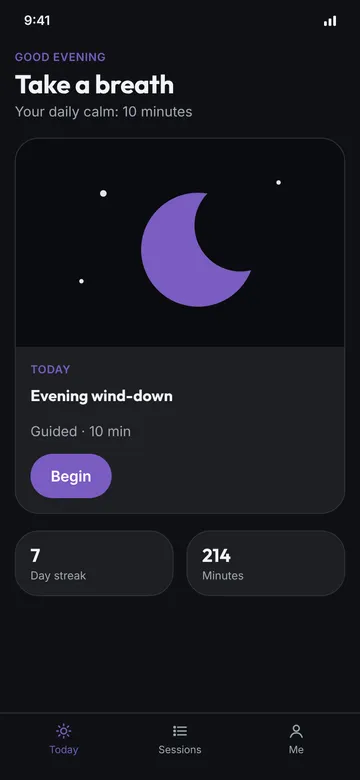
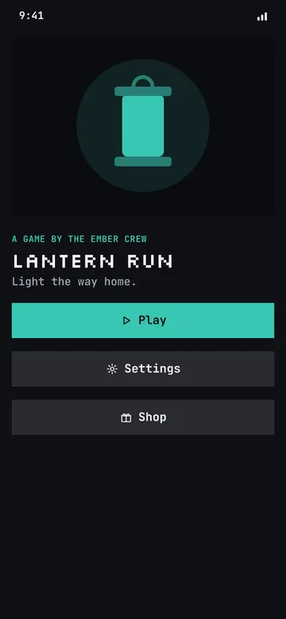
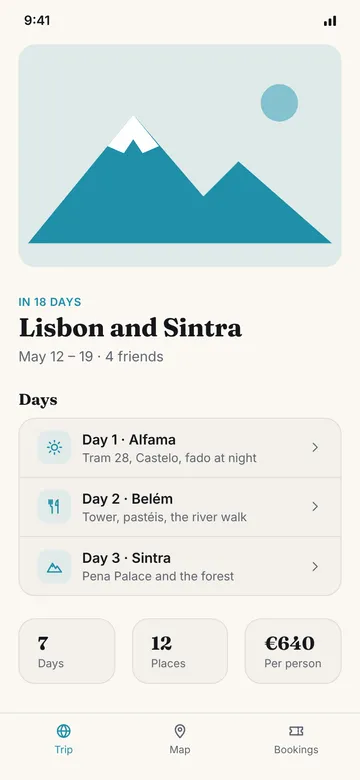
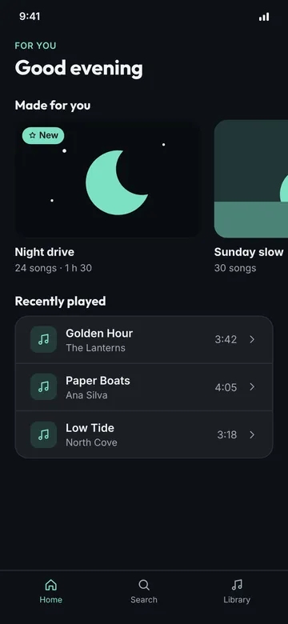
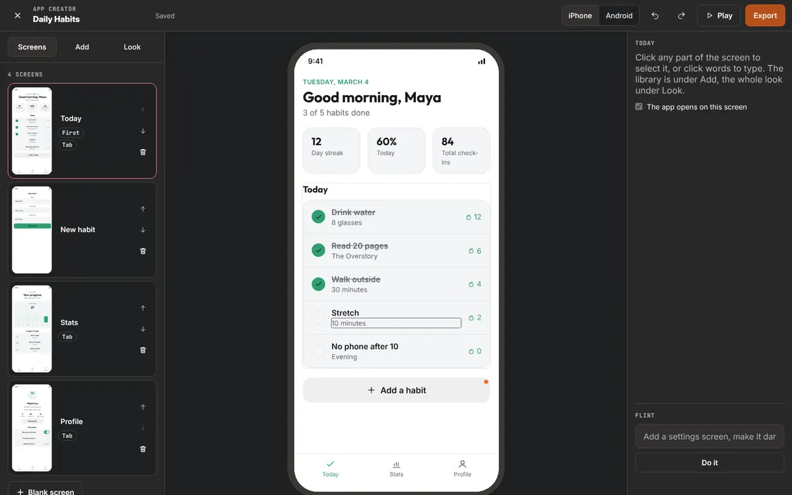
- 54 apps to start from, 56 app looks, 61 app parts and 51 ready-made screens.
- Change the color, corners, font, spacing and light or dark once, and every screen follows.
- Tell Flint “add onboarding” or “add a settings screen” and it stacks them on. Kits from the add-on shelf drop in the same way.
- Export a phone web app that works offline, or hand the design to your AI helpers to build for real. An Expo project export is there too beta
// motion studio
Motion graphics that loop, on the beat.
One shape that never cuts: it morphs from state to state while a cursor clicks and drags, and the last frame is the first, so it loops. Every clip on this page was drawn by the same engine that runs in the app.
- 128 motion templates, including 69 social post layouts for TikTok, Reels, Shorts, Instagram and X.
- 54 motion feels, from calm to punchy. Say “snappier” or “make it 9:16” and Flint changes it.
- Add your own song: the tempo is found in your browser and every change lands on the beat.
- Export a video, a GIF, a picture, one web page that plays it, or a section of your website.
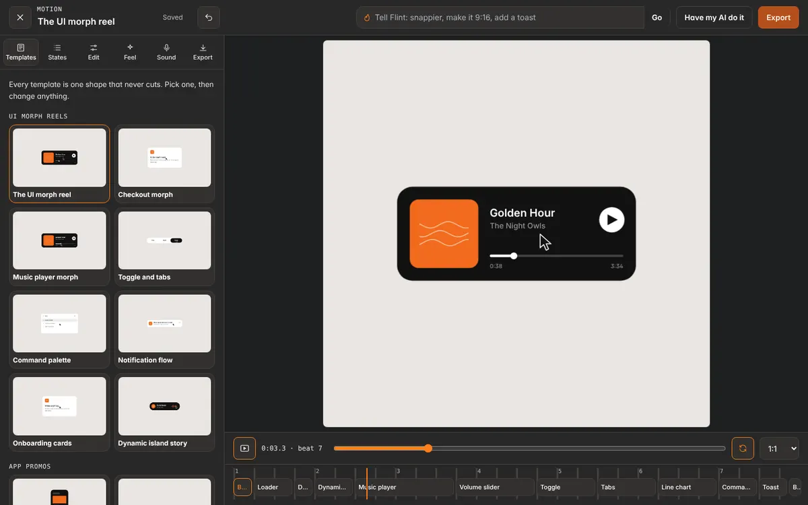
// launch kit
Everything the app stores ask for.
Store screenshots at the exact App Store and Google Play sizes, an app icon in every size, the store text with its limits, and a checklist for both stores. Drag the line to see a screen become a store screenshot.
- 50 screenshot styles and 54 icon styles, with frames we drew ourselves.
- 17 paywall designs for your app. Payments are not connected, and the designs say so.
- A 24-step checklist for Apple and Google, in plain words. Not legal advice.
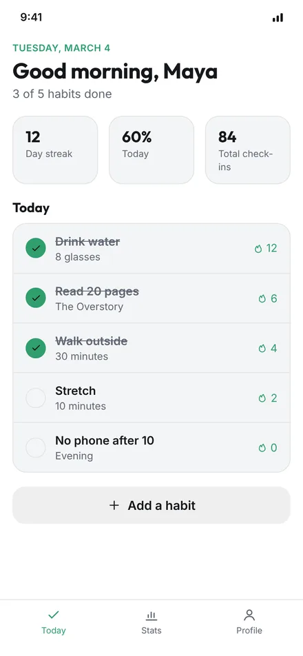
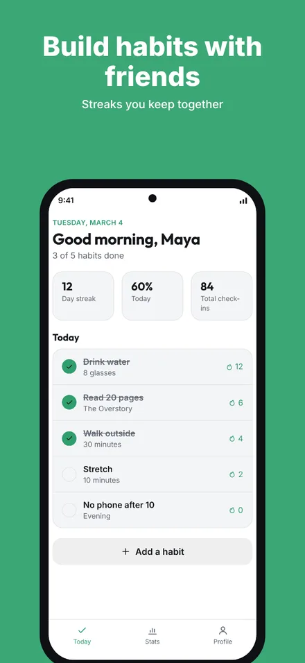
Your screenStore screenshot// suggestions
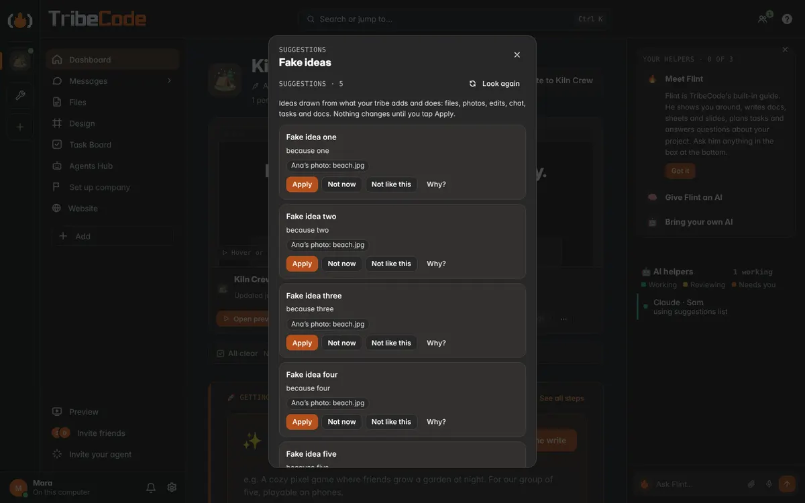
Ideas from your tribe, a few at a time.
When someone adds a photo, a file or a task, or makes the same edit again and again, the app turns it into a small idea for the site, the app, a clip or the store page.
- Each idea says who it came from. Nothing changes until someone presses Apply, and Undo takes it back.
- It works while your computer is idle and learns from what your tribe applies or turns down.
- Photos are read on your own device and never sent anywhere. Gentle, Often or Off, in Settings.
Try it with your friends.
TribeCode is free and open source. Download it, or open it in your browser.